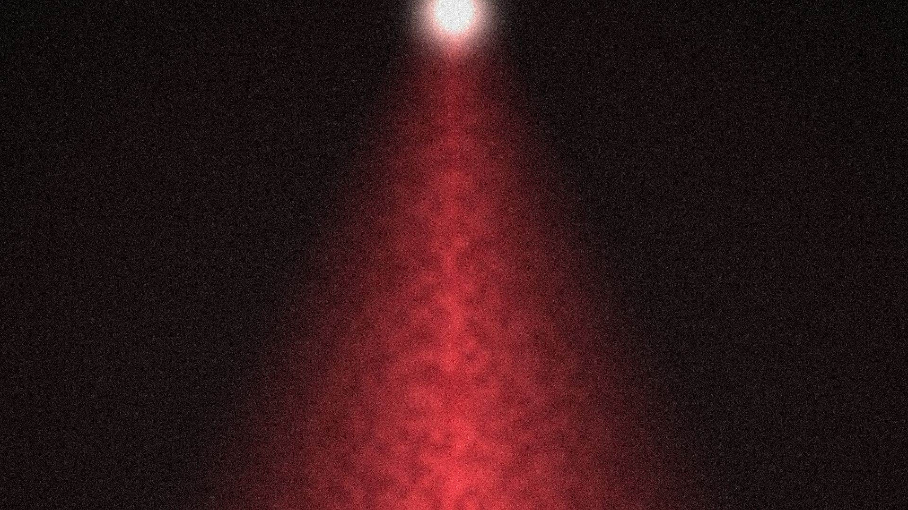
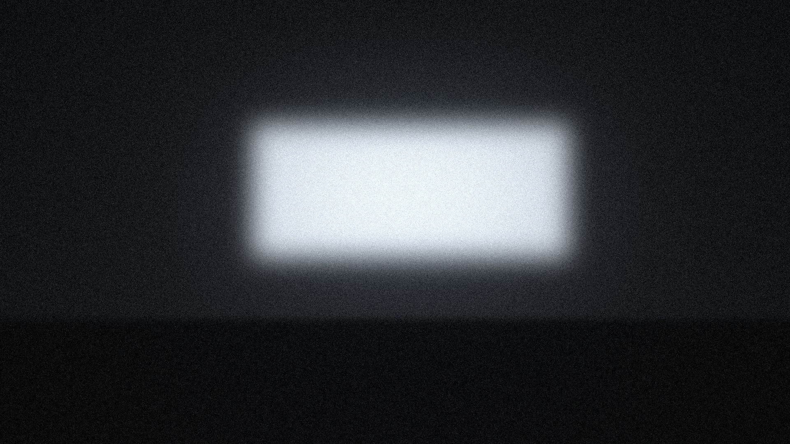

Canal UTV
Programação própria, reprises e acervo no ar 24 horas por dia.
A transmissão ao vivo será exibida aqui.
Também em www.utv.tv.br.
Um dia no canal
O que vai ao ar em cada parte do dia, de segunda a sexta. Os horários são aproximados.
- MadrugadaReprises e acervo UTVDocumentários e programas que já foram ao ar.
- ManhãProgramas e quadros da UTVConteúdo produzido pela Central de Produções.
- TardeProgramação da tardeDocumentários, eventos e transmissões.
- NoiteProgramação da noiteProgramas e reprises do dia.
Perdeu? Tem reprise
Os programas que já foram ao ar ficam numa playlist do YouTube. Quando a UTV publica um episódio, ele aparece aqui automaticamente.

A playlist de reprises será exibida aqui.
Onde assistir
Acompanhe a programação da UTV aqui e em www.utv.tv.br. Para anunciar, chame no WhatsApp (43) 99126-7102.